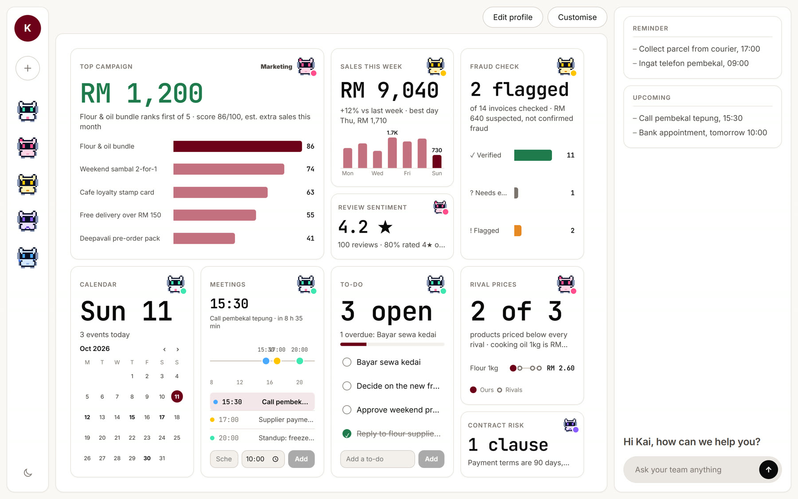

02 · Why
Kaunter · Islow
No agency to read reviews or watch rivals.
No clerk to catch a duplicate or a swapped bank account.
No lawyer to flag a 90-day payment clause.
03 · What
Kaunter · Islow

04 · How
Kaunter · Islow
Next.js · FastAPI · LangChain · LangGraph · WorkBuddy
05 · Why it is different
Kaunter · Islow
06 · WorkBuddy
Kaunter · Islow
Dropped in a OneDrive folder. WorkBuddy reads it and cleans the data.
Missing evidence is flagged, never guessed. The owner approves the exact report.
Outlook and Telegram. Approval never triggers a payment.
Our Manager and Marketing agents also run on WorkBuddy, as reusable skills.
07 · Live
Kaunter · Islow
agentsdiscusstors.vercel.app